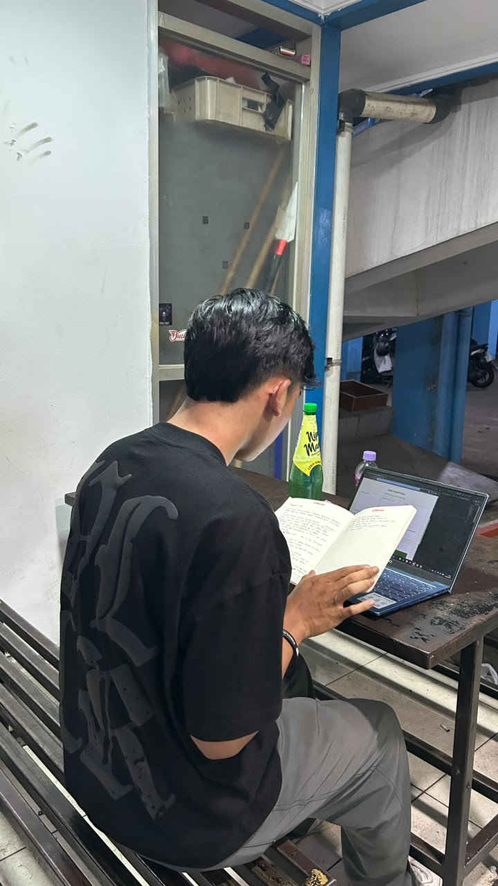
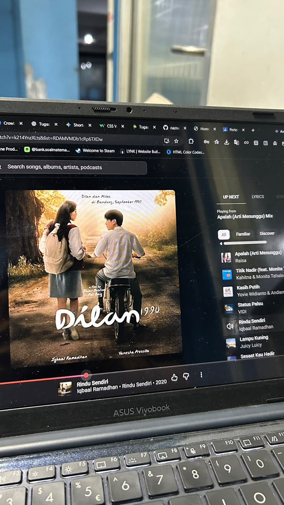
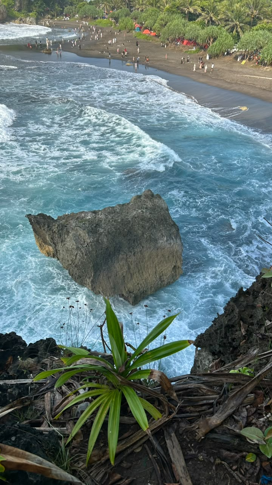

Membaca Buku
Membaca membantu menambah wawasan, memperluas pengetahuan, dan melatih konsentrasi.
Kegiatan yang membuat waktu luang lebih menyenangkan
Hobi merupakan kegiatan yang dapat mengisi waktu luang, mengurangi rasa jenuh, dan menambah pengalaman.

Membaca membantu menambah wawasan, memperluas pengetahuan, dan melatih konsentrasi.

Musik menjadi teman saat bersantai, belajar, atau menikmati waktu luang.

Fotografi membantu mengabadikan momen dan melatih kreativitas dalam mengambil gambar.
| No. | Nama Hobi | Manfaat | Waktu |
|---|---|---|---|
| 1 | Membaca | Menambah wawasan | Waktu luang |
| 2 | Mendengarkan Musik | Relaksasi | Saat santai |
| 3 | Fotografi | Melatih kreativitas | Akhir pekan |